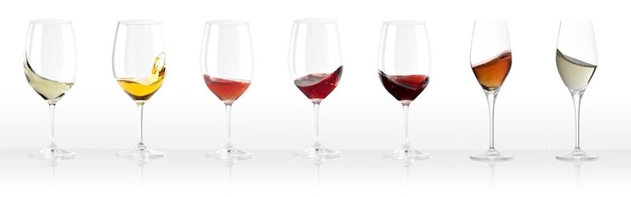

Champagnes
Bons Plans Champagne
pour acheter du champagne les yeux fermés
Déstockage, meilleures ventes, coups de cœur, soldes, ventes privées…
La Maison des Vins de France vous propose une foire aux vins permanente.
Achetez votre champagne en toute confiance et épatez vos amis lors de vos réceptions.
Synonyme de fête, le champagne symbolise dans le monde entier l'élégance à la française.
Il est aussi le modèle de la plupart des effervescents de qualité, dont l'élaboration repose également sur la double fermentation en bouteilles.
Mais si l'on parle généralement du champagne, au singulier, son visage est pluriel et il offre une grande variété de styles : blanc de blancs, blanc de noirs, millésimé ou non, dosé ou non...
Autre particularité : la plupart des viticulteurs cèdent tout ou partie de leurs raisins aux grandes maisons, qui se chargent d'élaborer le vin et de le vendre sous leur marque.
On n'oubliera pas enfin les deux autres appellations de Champagne, en vins tranquilles : coteaux-champenois et rosé-des-riceys.
Trois principaux cépages sont cultivés ici : pinot noir, pinot meunier et chardonnay.
Ils donnent naissance à de multiples champagnes, qui associent plusieurs vins de base (l'art de l'assemblage).
On trouve ainsi des blancs et des rosés, des blancs de blancs (issus du chardonnay seul), des blancs de noirs (de pinot meunier, de pinot noir ou des deux variétés), ou des blancs issus de l'assemblage des trois cépages.
Par ailleurs, le dosage différencie les bruts zéro (extra-secs), les bruts, les demi-secs, voire les doux.
Il existe aussi des vins non millésimés (majorité) et des millésimés, ainsi que des cuvées de prestige – ou cuvées spéciales – au prix de vente très élevé dans les grandes marques.
Quel que soit son type, on s'accorde à penser que le meilleur champagne est celui qui a mûri le plus longtemps sur ses lies (cinq à dix ans)?; il doit être consommé dans les six mois suivant son dégorgement.
Outre les champagnes, on trouvera dans la région deux autres appellations, en vins tranquilles : le rosé-des-riceys et son fameux « goût des Riceys » (amande et fruits rouges), et le coteaux-champenois, essentiellement produit en rouge à partir des pinots noir et meunier.
Bouteille de champagne par contenance
De la demi bouteille jusqu’au Nabuchodonosor en passant par le Magnum ou le Jéroboam,
Retrouvez notre gamme complète de bouteilles de champagne.
Idées cadeaux Champagne
Offrir du champagne est une excellente idée cadeaux.
Notre sélection de cadeaux autour du champagne va vous permettre de faire le bon choix...
CHAMPAGNE MILLÉSIMÉ, BRUT GRAND CRU & Cie
La Maison des Vins de France vous propose une des offres les plus complètes de champagnes.
Vous recherchez un champagne blanc de blancs ou un magnum de champagne ? Ruinart, Dom Pérignon, Veuve Clicquot ou Moët et Chandon ?
Retrouvez toutes les plus grandes maisons de champagne dans nos caves.
A découvrir également, notre offre Prosecco, Moscato, Lambrusco, Crémant, Cava, Cerdon, Clairette de Die.
Des idées cadeaux autour du vin ou du champagne
Notre espace cadeau vous propose de découvrir notre sélection de cadeau vin ou champagne.
Plus d’excuses pour être à court d’idées cadeaux ! Accessoires, coffrets vins, coffrets champagnes ou coffrets spiritueux,
offrez un cadeau original en fonction de votre budget.
Laissez-vous guider par un vaste choix de coffrets.
Une sélection pour faire plaisir en fonction des profils de chacun !
Vous recherchez un vin d’honneur ou un Champagne pour votre mariage ?
Futurs Mariés ! Vous êtes en pleine préparation du plus bel évènement de votre vie ?
Dur de choisir le bon vin ? Ne laissez pas au hasard le choix des vins avec votre menu, La Maison des Vins de France vous accompagne dans la réussite de votre sélection.
Description :
Itaque tum Scaevola cum in eam ipsam mentionem incidisset, exposuit nobis sermonem Laeli de amicitia habitum ab illo secum et cum altero genero, C. Fannio Marci filio, paucis diebus post mortem Africani. Eius disputationis sententias memoriae mandavi, quas hoc libro exposui arbitratu meo; quasi enim ipsos induxi loquentes, ne 'inquam' et 'inquit' saepius interponeretur, atque ut tamquam a praesentibus coram haberi sermo videretur.
Quare talis improborum consensio non modo excusatione amicitiae tegenda non est sed potius supplicio omni vindicanda est, ut ne quis concessum putet amicum vel bellum patriae inferentem sequi; quod quidem, ut res ire coepit, haud scio an aliquando futurum sit. Mihi autem non minori curae est, qualis res publica post mortem meam futura, quam qualis hodie sit.
Marque
Couleurs

Goût
La Divine
Blonde
La Folle des Bois
Blonde
La Choulette
Blonde
Gavroche
Blonde
Coup de coeur
Vous recherchez un vin d’honneur ou un Champagne pour votre mariage ?
Futurs Mariés ! Vous êtes en pleine préparation du plus bel évènement de votre vie ?
Dur de choisir le bon vin ? Ne laissez pas au hasard le choix des vins avec votre menu, La Maison des Vins de France vous accompagne dans la réussite de votre sélection.